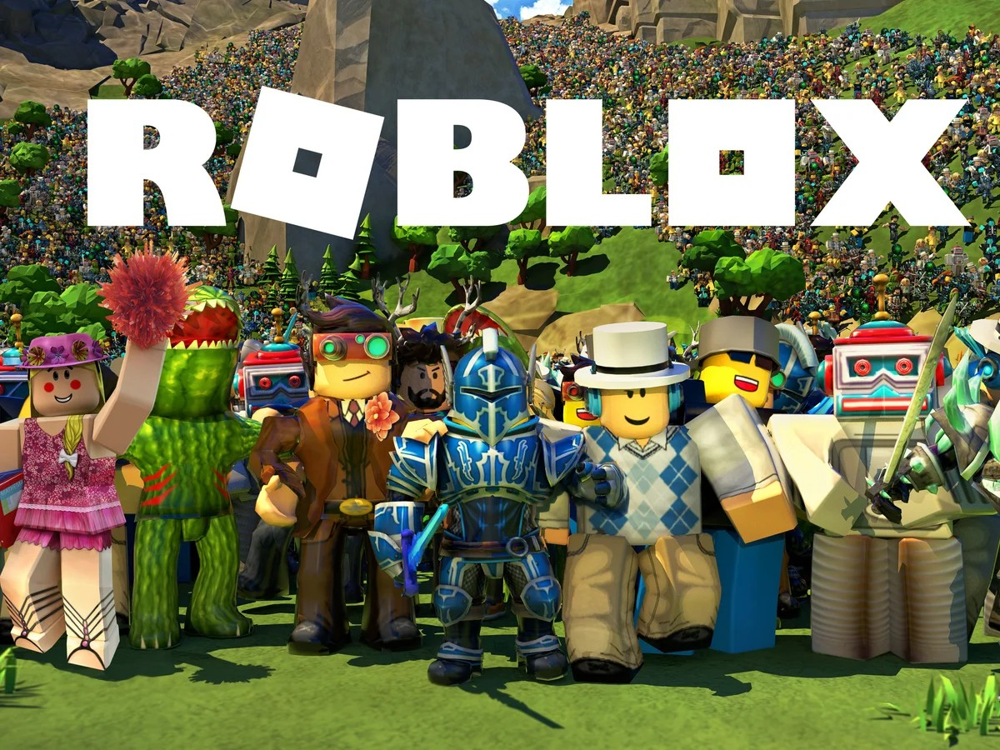

Roblox is great because of its incredible variety of games, offering something for everyone regardless of age or interest. With millions of user-created experiences available,
players can explore everything from adventure and role-playing games to simulators, obstacle courses, and even educational games.
This vast selection keeps the platform fresh and exciting, as there’s always something new to try. The diverse game genres also encourage creativity and learning,
allowing users not only to play but also to build and share their own games with the community.
This variety makes Roblox a unique and engaging platform that constantly evolves with its users.
Creative opportunities
Roblox is an excellent platform for creative opportunities because it empowers users to design, build, and share their own games and experiences.
Using Roblox Studio, anyone—from beginners to experienced developers—can bring their ideas to life with powerful tools and scripting features.
This freedom encourages creativity, problem-solving, and even collaboration, as many developers work in teams to create more complex games.
Players can design unique characters, environments, and game mechanics, giving them full control over their creations.
Provider a platform for users to develop
Roblox is a great platform because it provides users with the tools and support to develop their own games, experiences, and skills.
Through Roblox Studio, users can learn how to code, design 3D environments, and create interactive gameplay, all within a user-friendly interface.
This hands-on experience helps players develop valuable skills in programming, game development, and digital creativity. Roblox also offers resources like tutorials,
forums, and a supportive community, making it easier for users of all ages to grow and improve.
Whether someone wants to become a game developer or just explore their creativity,
Roblox offers a strong foundation for learning and development.
Social Interaction
Roblox is great for social interaction because it allows players to connect, communicate, and collaborate with others from around the world.
In many games, users can team up, compete, or simply hang out in virtual spaces, making it a fun way to make new friends and strengthen existing ones.
The platform also includes chat features,
friend lists, and group systems that encourage ongoing social engagement. Whether working together to complete challenges or just exploring virtual worlds side by side,
Roblox creates opportunities for meaningful interaction in a safe, moderated environment.
This makes it more than just a gaming platform—it’s a social space where people can connect through shared interests and creativity.
Diverse Gameplay
Roblox is great for its diverse gameplay because it offers an endless variety of game types and styles created by users from all over the world
. Whether you enjoy fast-paced action games, peaceful role-playing experiences, competitive simulators, or creative building challenges,
Roblox has something for everyone. This diversity means players can easily switch between genres and never get bored, constantly discovering new and unique experiences.
The platform’s open-ended nature also encourages innovation, so new trends and game mechanics are always emerging. With such a wide range of gameplay options,
Roblox keeps players engaged and entertained no matter their interests.

ROBLOX
Category
Details
Category Details
Name
Roblox
Type
Online Game Platform & Game Creation System
Developer
Roblox Corporation
Launch Year
2006
Platform(s)
Windows, macOS, iOS, Android, Xbox One
Primary Language
Lua (for game scripting)
Monetization
Robux (in-game currency), game passes, developer products, premium memberships
Audience
All ages (mainly kids and teens, but also older creators)